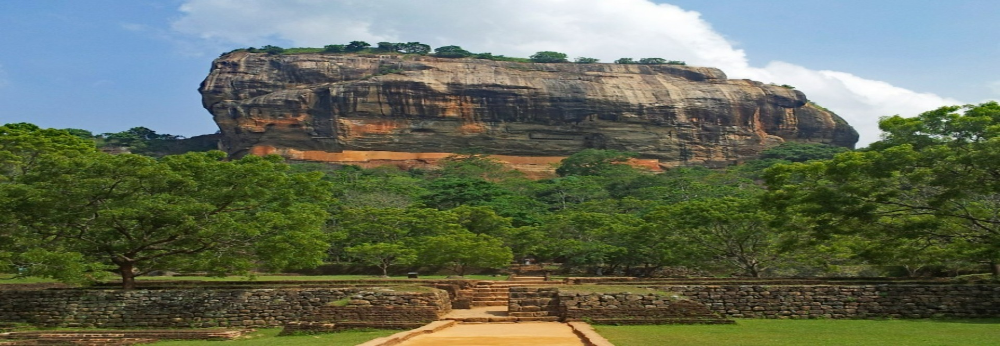

- 
-

-

The Lighthouse was built in 1952. Both tourists and locals come to this place to sit and relax in beautiful spot. From the light house, you can get nice panoramic view of sea and the harbor. This place is use by Sri Lanka Navy for traditional gun salutes. Its height is 12m (39ft) and also have four statues of lions.
Koneswaram Kovil is one of the most significant Hindu temples in Sri Lanka. This temple, which is believed to have been built back in 1580 BC, is dedicated to Lord Shiva. It is located in Trincomalee, in the Eastern Province.
"A few countries like Sri Lanka and Honduras have led the way in slashing maternal mortality. ."
Author: Nicholas D. Kristof"I'm a Canadian citizen. But I always want to feel at home in Sri Lanka. I'm a member of both countries.."
Author: Michael Ondaatje